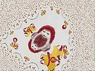
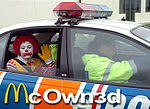

Ran Ran Ru
 De: La Frikipedia, la enciclopedia extremadamente seria.
De: La Frikipedia, la enciclopedia extremadamente seria.
Ran Ran Ru (también conocido como Obedece a McDonalds, McRoll o la cosa rara que me enseñaste el otro día) es un traumático vídeo de Youtube lanzado por McDonald en un intento de dominar el mundo en el que su payaso característico aparece actuando en minianuncios de ambientación extraña emitidos en Japón. Sumamente estrambótico, si no lo has visto es mejor que no lo veas, puesto que tu estabilidad mental pendería de un hilo.
El vídeo
El tío en el banco momentos antes
de que el muy pendejo se caiga de caerse.
 Imágenes psicodélicas producto de la locura del que ve el vídeo.
Vídeo espantoso donde los haya pero tan humorístico como Edgar se cae, Ran Ran Ru es una sucesión de imágenes de Ronald haciendo chorradas que los malvados directivos de McDonald emitieron en Japón esperando que los cerebros de los televidentes se frieran y comprasen más de sus productos hechos de ya sabemos qué materiales. Si tuvo efecto o no es un misterio.
Descripción
- La primera secuencia muestra una vista de pájaro por la que unos chavales de Japón tiran de una cuerda, y entre ellos se ve a un espantajo de pelo rojo con botas rojas de medio metro de longitud.
- Luego sale un vídeo de inmediatamente después que muestra como los que tiran de la cuerda del lado contrario la sueltan premeditada y alevosamente, por lo que Ronald y sus adláteres caen al suelo
dándose por culo en fila cómicamente.
- La siguiente muestra un campo de béisbol en cuya titantron aparece el payaso de marras a punto de lanzar.
- Después sale la escena propiamente dicha en la que el tío lanza, la bola acierta al cámara y muere, por lo que termina ahí.
- En otra, rodada en lo que parece ser ¿un campo de fútbol americano? ¿Y si es así, por qué Ronald está jugando al fútbol normal, imitando penosamente a Ronaldinho? Pero bueno, El caso es que los chavales esos de antes aparecen persiguiéndole y el tío metamorfosea su ropa en una de baloncesto, siendo igualmente hecho huir por sus pequeños esclavos sexuales, y luego sale atrapando una bola de béisbol, suponemos que la que lanzó antes, que describió un giro espacio-temporal imposible.
- En la siguiente, muy breve, el tío sale donde antes, pero haciendo skateboard.
- Luego sale el payaso en un banco de un parque leyendo melancólicamente. Le da la vuelta al libro para ver la portada, demostrando que no tiene ni zorra idea de lo que aparentemente puede llevar horas leyendo, pone cara de
gilipollas despistado y dice algo ininteligible. Después se despereza de aburrimiento, y se apoya en el respaldo del banco...
- ...que, para colmo, y por métodos desconocidos, cae hacia atrás soltándose del suelo y una hostia el Ronald de encima.
- El McDonald sale como antes, leyendo, pero suena su móvil con la musiquilla de la empresa y habla por él algo incomprensible.
- Pero debe ser gracioso, ya que se descojona ante lo que oye.
- Luego habla a la cámara en lo que parece ser una mezcolanza de masai.
- En una famosa escena, sale ante el espejo bailando un aerobic patético y cutrísimo.
- Otra vez sale el pesao y empieza a bailar ante la cámara.
- Luego se ven los chavales psicópatas de antes saltando en fila con el payaso de los cojones entre ellos, y se ponen a bailar.
- En la siguiente el tío sale en una silla de esas con las que se pegan en Pepe Viyuela.
- Por último, sale el tipejo con sus esclavos sexuales haciendo cosas raras y acabando con un teatral "RAN RAN RU".
La versión más conocida: el retorno de Ronald
Pero si esto os ha parecido espantoso, elevad vuestros brazos y apéndices varios para lanzar un gran saludo a ¡la delirante secuela del horror mcdonaldiano!
El vídeo comienza con el tío este cayendose del banco unas 2000 veces, siendo cada una el banco devuelto a su posición original para que pueda seguirse cayendo. Antes de que penséis que todo el vídeo es así, y tras pasar un rato que se nos hace una eternidad, el payaso este inicia un baile delirante y espantoso delante de un espejo, ante la cámara e intercambiando caras con fotos. Tras unos pases, la música se va haciendo peor y el tío se cuadruplica, estando dos clones detrás de él con quién sabe qué intenciones y uno colgando del techo. La presión en vuestras meninges comienza a aumentar, y el móvil del payasete suena 800 veces por segundo en el banco. Mientras es sustituido por un mamarracho en chándal tipo Kill Bill, el auténtico vuelve a aparecer y, mientras os desesperáis buscando el botón de cerrar con el ratón, la escena del banco vuelve a salir con una especia de armonía demencial y morbosa hasta que al final el banco cae a cámara lenta y el payaso muere. Fin.
¡Felicidades! Acabáis de perder la razón. Bienvenidos al inframundo.
Efectos secundarios
 Ronald fue encarcelado después de que las autoridades vieran tal atrocidad.
Expertos consultados han declarado que la visión del vídeo produce diarrea cerebral y desprendimiento progresivo del bulborraquíedo, por lo que el sujeto sufre secuelas de por vida. Tambien causa una sensasion de angustia y de querer hacer Ran Ran Ru durante las primeras 72 horas. Existe una colección de personas que vieron éste vídeo y cómo eso marcó su vida.
Personajes famosos que vieron el vídeo y qué les sucedió después

G-Man tras ver el vídeo.
- G-Man: el personaje misterioso de Half-Life vio el Ran Ran Ru y quedó en un estado lamentable. Sus superiores lo llevaron a un manicomio pero lo dejaron ir a su aire, y el tío, en sus delirios y haciendo eses por la calle decidió ir a Black Mesa y montarla parda. Pero esa es otra historia.
- Mibalia's Hall of Fame hicieron ver este vídeo a Escrotoncio, pero Clotaldo logró absorber el impacto, quedando duramente tocado después.
- El Tio la Vara: en una batalla contra el Capitán Fanegas éste mandó traer una pantalla gigante por la que emitió el Ran Ran Ru a todo volumen. El Tío la Vara quedó traumatizado y perdió la memoria hasta que la recuperó sin querer tras comer una hamburguesa de McDonald.
- Shinji Ikari: tras ver el vídeo nada cambió en él. Es imposible estar más traumatizado de lo que él ya está en la mayoría de la serie.
- Gollum: Después de robarle el Anillo a aquel amigo suyo, Gollum lo usó para colarse a escondidas en la casa de un conocido geek elfo. Allí éste le pilló y le hizo ver como castigo ambos vídeos 20 veces cada una. Y al final el pobre quedó como quedó. Respecto al Anillo, el elfo lo tiró por ahí sin saber lo que era y Gollum lo volvió a atrapar.
Enlaces externos
Llegado a este sitio del artículo, hemos de recordarte antes de que la curiosidad y el aburrimiento te hagan ver alguno de estos subproductos que sus contenidos pueden dejarte en estado vegetativo. Si quieres verlo, redacta testamento y pulsa en un enlace de los de abajo.
Original
Diferentes versiones
- Ran Ran Ru versión from Hell: la versión más temible de este vídeo de locura y muerte
- Ran Ran Ru versión psicodélica: no apto para gente propensa a ataques epilépticos
Autor(es):
- Sygma
- Harry El del Pote
- Gororo
- Torchic038
- NectarxD
- Generibot
- Dr nick
Frikipedia 2005-2016, Licencia
GFDL 1.2 - Extraído por FrikiLeaks